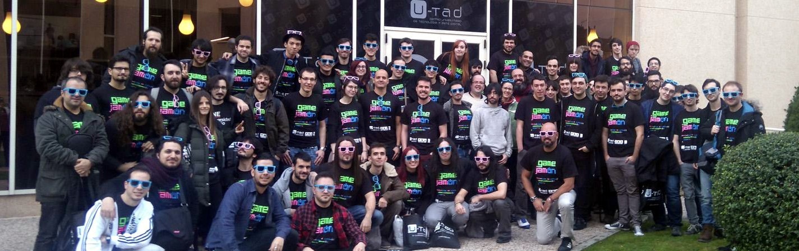
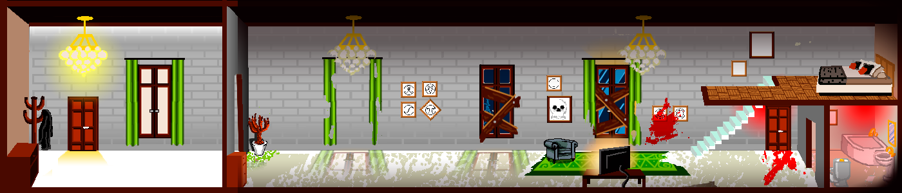
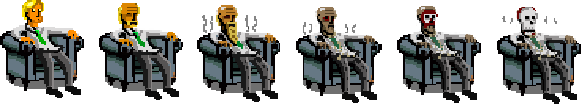
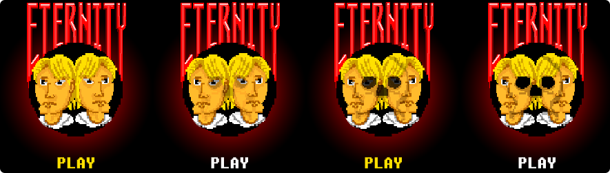

What is the Global Game Jam?
The Global Game Jam® (GGJ) is the world's largest game jam event (game creation) taking place around the world at physical locations. Think of it as a hackathon focused on game development. It is the growth of an idea that in today’s heavily connected world, we could come together, be creative, share experiences and express ourselves in a multitude of ways using video games - it is very universal. The weekend stirs a global creative buzz in games, while at the same time exploring the process of development, be it programming, iterative design, narrative exploration or artistic expression. It is all condensed into a 48 hour development cycle. The GGJ encourages people with all kinds of backgrounds to participate and contribute to this global spread of game development and creativity.
The structure of a jam is usually that everyone gathers on Friday late afternoon, watches a short video keynote with advice from leading game developers, and then a secret theme is announced. All sites worldwide are then challenged to make games based on that same theme, with games to be completed by Sunday afternoon. The jam is known for helping foster new friendships, increase confidence and opportunities within the community. The jam is always an intellectual challenge. People are invited to explore new technology tools, trying on new roles in development and testing their skills to do something that requires them to design, develop create, test and make a new game in the time span of 48 hours. The GGJ stimulates collaboration and is not a competition. [1]
The local jam site where a friend graphic designer and I went was Global Game Jam On (Spanish wordplay). Despite being away from our home, we chose this venue because they offered a lot of facilities (large desktops to work, free food, expert support, etc) and the participants were almost all the time there working so it was an optimal work environment. We will definitely repeat with them if we can as the experience was great.
 Photo of all the participants of the Game Jam OnThe secret theme of this year was rituals. The word 'Ritual' offers a lot of possibilities, people were very creative and presented very good games. I will focus here on ours.
My team
My team initially was formed by my friend and me, taking advantage of it was our first jam and we worked well together, and then three more unknown people were added. We were lucky to find such good teammates. One was a game designer, another was a programmer with little experience and another was a very good pianist. Except for the musician who went to work remotely to his studio, I was almost the whole weekend with the other three workmates.
It is a great experience to meet, make friends and work with people totally unknown in such a short time. We were a great team and although we could not win the challenge we had a great time together and that is what is important.
The idea
All of us participated creating the original idea for the game. Each one brought all their experience and their opinion were taken into account. After a few hours of brainstorming and debate, we have the idea: Eternity.
Eternity is a click and point game of aesthetic pixel art. The protagonist of the game is a successful millionaire and the main stage is his luxury house. The action happens through the interaction with the stage, solving puzzles that will change the stage and in the own personage. Narrative is told through the dialogues with other characters and descriptions of objects.
This character must perform a kind of seven rituals that will bring him to an unexpected end. These rituals are linked (warning spoiler) with the seven deadly sins. These will cause the stage (his luxury house) to deteriorate and different events happen in each of the phases.
 The luxurious house being deterioratedThe connection between rituals and capital sins is very important. For example, to complete the phase of gluttony sin you have to call the pizza maker by phone and eat pizza repeatedly until death.
The end of the game, which is supposed to be the most difficult puzzle is related to the sin of sloth. The player should sit in a chair and wait slowly until the protagonist dies (the character grows old). This seems easier than it really is since the room is full of objects and characters with which to perform actions and the option to sit and wait a while until you see some graphic change in the character is not something intuitive. However, if the player has understood that the rituals are linked to the deadly sins and have identified them, he knows that the sin that is missing is that of sloth.
 Final deathTasks
As we had a short time to work on the concept, it was necessary to define the tasks well and to be able to work all efficiently in parallel. I highlight the following that we made among all:
- Define a narrative format. So that on the one hand I can work on the parser of that format and the panels of the dialogues and on the other hand, the game designer can write the dialogues and information of the objects.
- Define the different types of interactions and possible events. So that on the one hand I can implement these interactions on the stage and on the other hand, the game designer can define well the puzzles based on them.
- Detail the aesthetics of each stage with words to be able to produce musical pieces for each one and eases the work of creating art.
My occupations in the team were of a technical leader since I was the one with the most experience (my programmer workmate had never worked with Unity and C#). I had to elaborate the list of technical tasks to implement. I defined to implement the following:
- Interactive objects
- Animated objects
- Characters
- Interactions and action resolvers
- Special behaviors
- Narrative parser and provider
Implementation
The development of the game has been done integrally in Unity and the programming language chosen is C# since it is the most mature, documented and the most experience I have.
It was decided that the default platform was the web, powered by WebGL. Although Unity offers a lot of facilities to adapt it to other platforms and in our roadmap was an adaptation to mobile.
As we know C# is an object-oriented language and it is very interesting to take advantage of the features offered by such a language by applying design patterns, abstraction and avoiding duplication of code.
Thus classes and interfaces were defined, the most important being:
- Character, this class must be implemented by the animated characters and objects. It has methods like MoveIfNeeded, RotateIfNeeded, SmoothMovement.
- IActionResolver, this interface must be implemented by the scripts that resolve the actions that are performed in the game. It has a method called TriggerAction with three parameters, one of them a callback that is invoked when the action is finished. An example implementation of this interface is DirkSuicideAction, this action loads the scene by reviving the protagonist differently depending on the parameters of the action.
- SceneState, is an abstract class that has to control the evolution of a level. It has methods like GetProgress and SaveScene. It is used for example to fill a ritual bar that appears in the interface (it is a very important clue for the user to solve the puzzles) and to control which dialogs and interactions are available during the level.
- NarrativeParser, is a class that parses files with the format defined for the narrative at load time of the game. It is based on XML so it is not very difficult to implement. Once the narrative is in memory, it has methods to access it and thus read the dialogues. In this way, it is relatively easy to translate the game into other languages.
- Interactuable, this abstract class contains the common logic of interactive objects. Its two most important implementations are abstract classes called Item and ActionableItem. One only provides information to the player and the other also performs an action. To access the implementation of the type of Interactualble is used the visitor pattern. Therefore, there is an interface called InteractuableVisitor with Visit methods.
Result
I have to say that unfortunately we could not complete the seven rituals on time. We were newbies, it was our first game jam and we did not calculate the time well. We could only complete three rituals (the first two and the last one because we want that the game has an end). The game was playable but did not have enough contents for the player to understand the dynamics of the rituals and the plot. Our mates from the Game Jam On gave us very good feedback and this experience helped us learn a lot. Far from being discouraged, this stimulates us to come back and get it in another edition.
 Game menuMy experience
The experience was very good. I had never participated in a game jam, this was the first and everything went very well. I had some Unity knowledge of having done some personal project previously and had no previous experience with click and point games.
The fact of carrying out a project of this type in such a short time, with people totally unknown and in multidisciplinary teams, requires having the knowledge very clear. It is necessary to make decisions and risk.
I will definitely repeat as soon as I can since I like hackathons and this one was very entertaining.